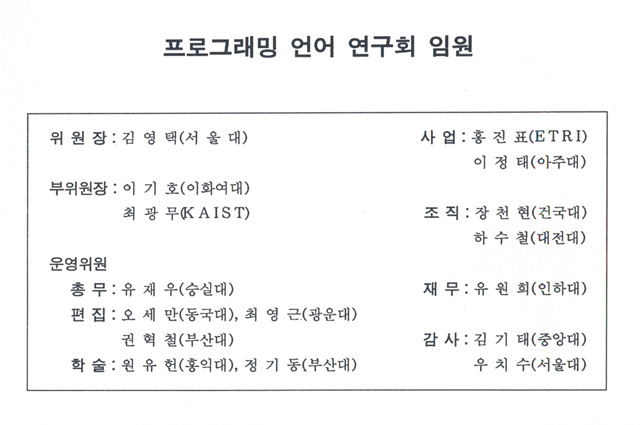
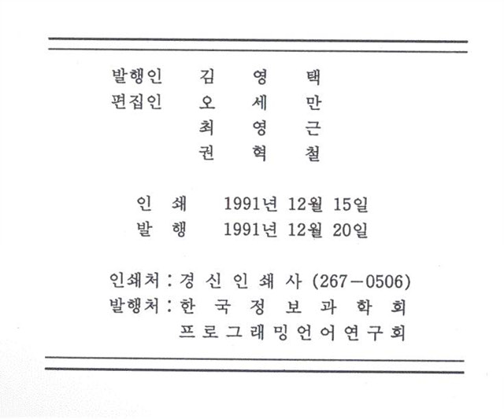

프로그래밍언어연구회지 제5권 제1호 (1991년 12월)
권두언:
김영택
논문
Attribute Grammer를 이용한 컴파일러 자동 생성기의 설계 및 구현
김경아, 이기호 (이화여자대학교)
Ada에서 동기 타스크의 비동기 통신
이양선, 오세만 (동국대학교)
국방 컴퓨터 언어(안)의 설계
최광무, 한태숙, 이수현, 이은정, 창병무, 강경우, 이경옥 (한국과학기술원)
경과보고


프로그래밍언어 연구회